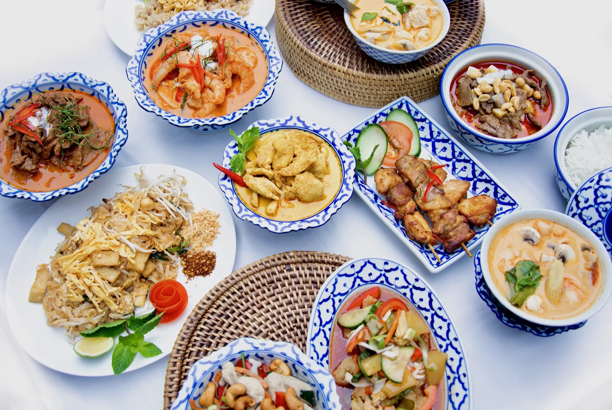
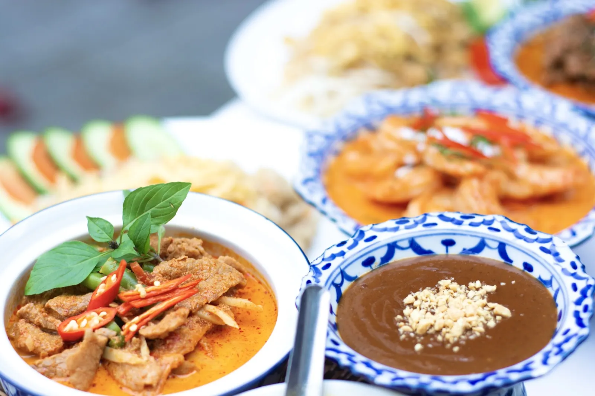
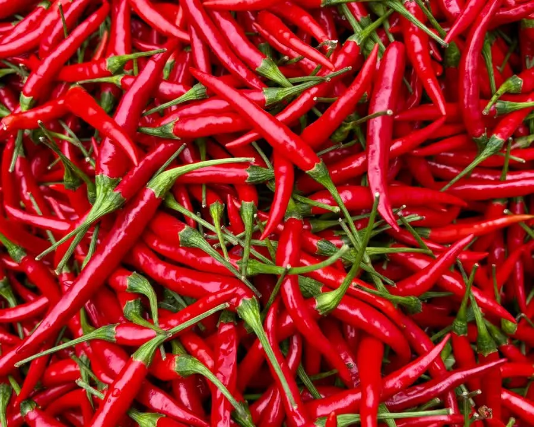
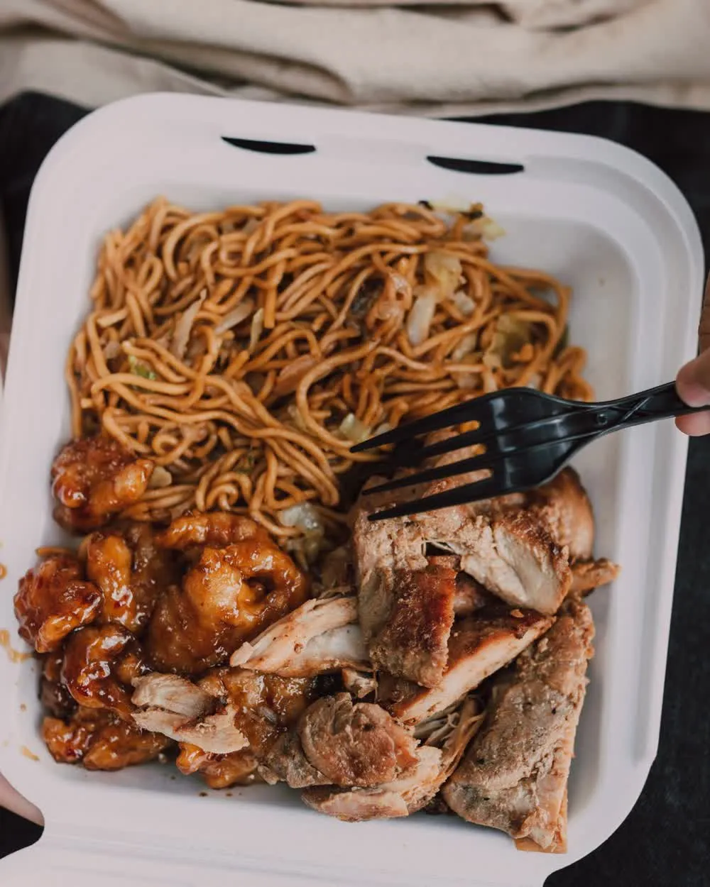
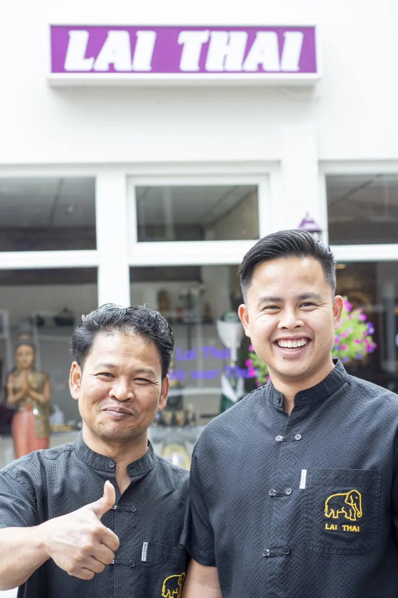
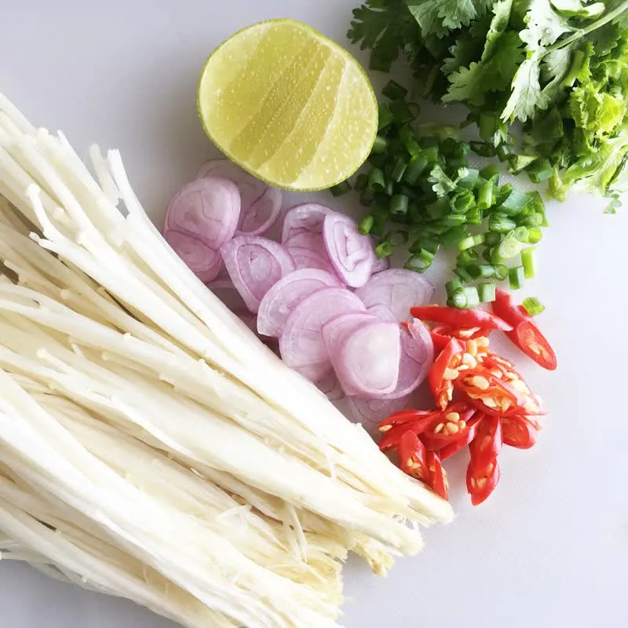
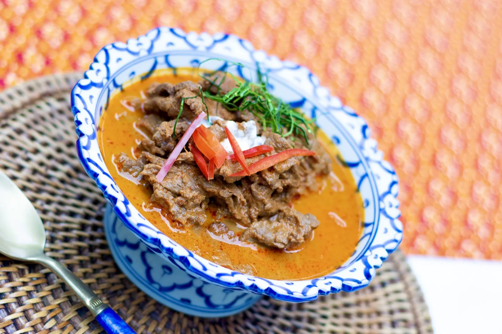

Elke wok apart
Je curry gaat pas het vuur op als jij besteld hebt. Daarom smaakt hij thuis nog zoals in de zaak.
Thais afhaal- en bezorgrestaurant · Den Bosch



Geen bak die staat te wachten, geen verrassingen bij het afrekenen. Dit krijg je ervoor terug.
Je curry gaat pas het vuur op als jij besteld hebt. Daarom smaakt hij thuis nog zoals in de zaak.

Kies zelf je afhaaltijd op het kwartier. Je loopt binnen, het staat klaar, klaar is klaar.

Bij elk gerecht zie je hoe pittig het is. Wil je het milder of scherper? Zet het erbij, de keuken past het aan.

Rijst met één of twee gerechten naar keuze, voor één vaste prijs van € 14,00.
Elke curry gaat hier vers de wok in. Dit zijn de vier waar de reviews vol van staan.

Rosbief in milde Massaman curry met aardappel, ui en pinda
Kipfilet in pittige groene curry, de klassieker van de kaart
Gebakken rijstnoedels met groenten, kip of garnalen en pinda's
Licht pittige garnalensoep met citroengras en limoenblad
De hele kaart staat online, met foto's en prijzen. Of stel je eigen bakje samen: rijst met één of twee curry's.
Zo snel mogelijk (± 20 minuten) of op het kwartier dat jou uitkomt, tot 19.45 uur.
Klaar op Muntelstraat 12, of thuisbezorgd vanaf € 35,00. Betalen doe je bij ontvangst, met pin of contant.

Loop gewoon binnen aan de Muntelstraat 12, tegenover de watertoren.
Di t/m zo van 16.00 tot 20.00 uurIn 1992 opende Lai Thai als Thais restaurant aan de Muntelstraat, misschien wel het eerste van de stad. Bijna een kwart eeuw werd hier aan tafel gegeten. Sinds 2015 gaat de keuken verder zoals de meeste gasten hem toch al gebruikten: als de plek waar je echt Thais eten meeneemt naar huis.



Echt veruit de beste Thai van Den Bosch, en dan ook nog eens een van de goedkoopste. Het eten is altijd vers.
Alle gerechtjes waren stuk voor stuk erg lekker, vooral de rode curry met kip. Het personeel was ook erg aardig en behulpzaam.
Veel Thais gegeten, maar hier proef ik toch het meest de authentieke smaak van Thailand terug.
Als je op tijd doorgeeft wat je wilt bestellen, staat het netjes op tijd klaar. Top service.
Onze eerste keer bij een Thai in Den Bosch, maar we hoeven niet verder te zoeken. De porties zijn goed, je krijgt echt waar voor je geld.
Muntelstraat 12, tegenover de watertoren. Of laat bezorgen vanaf € 35,00.